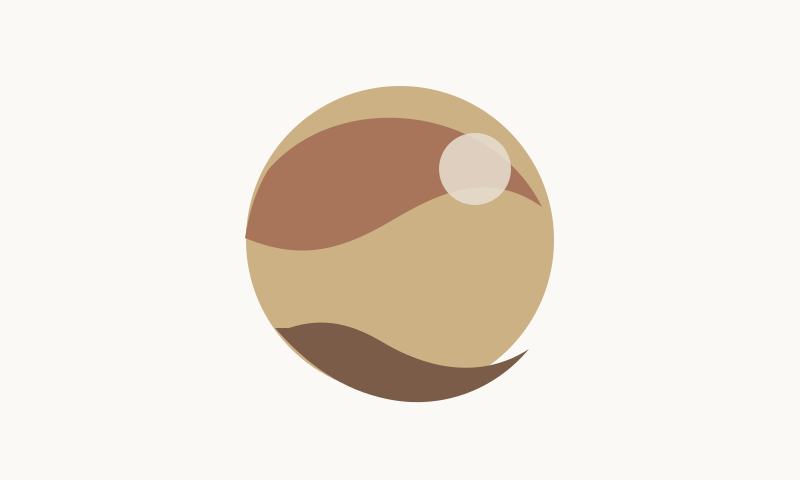

从零开始建造数字空间
背景
我一直想有一个自己的网站。不是那种模板博客，也不是社交媒体主页——而是一个真正属于我自己的数字空间。
过程
买了域名 catstarry.xyz，用了 AI 做需求分析，从 6 月聊到 7 月，把一个模糊的想法变成了清晰的 7 个板块。
下面是一段用来记录构建命令的代码：npm run build
npm run build
| 阶段 | 留下的东西 |
|---|---|
| 想法 | 一张不会消失的草稿 |
| 实现 | 一个能被阅读的页面 |
如果你也在开始自己的空间，可以从 Astro 文档 读起。
结果
现在你看到的这个博客，就是第一块拼图。
后续还有：聚合首页、碎碎念时间线、编程学习笔记、项目展示、和一个只有两个人能看到的财务面板。
原型补充演示 · 不进入正式文章
把复杂度留在合适的位置
长文需要安静的节奏，也需要清楚的工具感。像
Content Collection 这样的实现细节，可以在需要时被看见，但不应压过正文。
从想法到页面
- 把模糊的想法留成一张不会消失的草稿。
- 把值得重读的判断整理成可以阅读的页面。
- 让代码、表格和图片服务于同一段叙述。
- 先写下想法。
- 再编辑和预览。
- 最后把页面交给读者。
不是模板博客，也不是社交媒体主页——而是一个真正属于我自己的数字空间。 — 正文摘录
Giscus / light
评论
生产页面将在这里加载 Giscus。原型不连接外部评论服务。